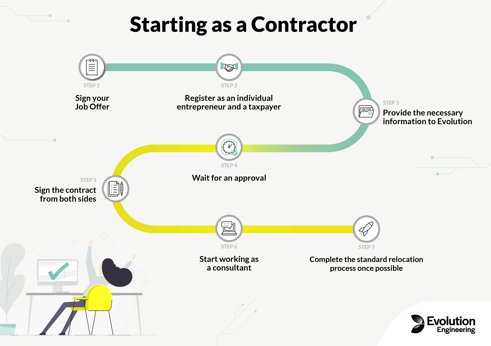
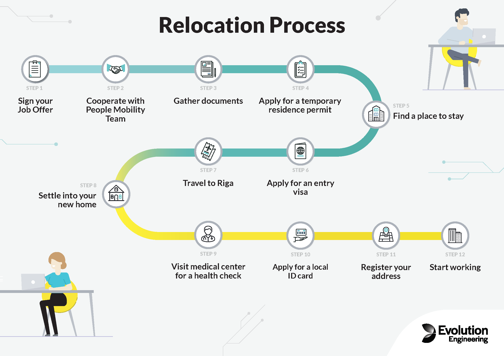

Programming, robotics, traveling
Привет, пожалуй, настало время рассказать о моём (точнее нашем с женой) переезде в Латвию. В этой статье я расскажу как мы вообще сюда попали.
Начнем, как всегда, немного с предыстории и отмотаем на июнь 2021. Мы живем в прекрасной квартире в нашем родном городе уже практически год. Я работаю на позиции DevOps в компании Сибинтек-Софт. У меня довольно много свободного времени, которое я уделяю своим проектам в съёмном офисе рядом с квартирой. Жизнь – идилия.
В один момент в компании меняется генеральный директор и всех сотрудников в несколько волн вызывают на работу в Москву после того, как мы на тот момент два года работаем удаленно. При этом не предвидятся перспектив ни по повышению, ни по тому, что снова что-то не изменится. А также желания жить и работать в Москве у меня особо нет – как-то бессмысленно, платишь больше – получаешь меньше. Ну и собственно у многих в тч у меня возникает вопрос о смене работы. Здесь я сделаю пропуск и мб напишу отдельно про подготовку резюме и компании с которыми я общался. Единственное, что стоит упомянуть то, что я искал либо полностью удаленный формат работы, либо релокейт в другую страну.
Через месяц уже будучи в Москве у меня на руках 7 оферов. Среди них очень хорошее предложение от компании Ozon, и последним приходит предложение от компании Evolution Gaming из Латвии. Выбор для меня был примерно следующий: либо остаться в очень хороших условиях в России, либо переехать в менее удобные условия в Латвию и осуществить то, о чем так долго думал (назовём это расширить свои границы и попробовать пожить в Европе). Я хорошо подумал, посоветовался и решил попробовать. Тк не сделай я этого тогда, мб и никогда бы не захотел разменивать те условия на эти. Я дорабатываю июль в Москве и увольняюсь.
На этот момент я никогда не был в Латвии и единственное, что я знал об этой стране было в этой брошюре.
Это не совсем относится непосредственно к переезду, однако работа контрактором была одним из этапов работы с компанией. И, скажу больше, мне кажется это очень интересной возможностью в принципе.
Необходимость трудоустройства в качестве контрактора обуславливается тем, что компания не может сразу заключить трудовой контракт (оказывается нельзя официально работать из другой страны). В связи с этим мне предложили вариант открыть ИП в России и оказывать услуги как компания для компании. На что я сразу согласился тк и так хотел попробовать поработать через ИП.
Так выглядит этот процесс со стороны сотрудника контрактора:

Честно сказать это лучшее, что случалось за историю моих трудовых отношений, в будущем я бы предпочел работать только по такой схеме. У неё есть ряд плюсов, среди которых:
Благодаря услуге регистрации ИП через открытие счета в банке, открыть ИП получилось очень быстро, буквально 4 рабочих дня. Единственное, что сильно напрягало: первые несколько дней мне поступало безумное количество звонков от поганых банков с предложениями их говноусловий. Что сильно раздражает, так это то, что сразу после электронного письма о открытии ИП они просто вторгаются в твоё личное пространство и под большим вопросом где и как, так быстро они взяли твой личный номер. При этом после такого маргинального вторжения в мою личную жизнь, они рассчитывают, что я буду иметь с ними дело. Ни за что! Клиента нужно уважать, а не вести себя как маргиналы. Впрочем надеюсь эти банки просто вымрут: Альфа, ВТБ, Россельхоз и прочим привет)
Тут нужно оговорится, что все эти звонки происходят:
К сожалению у столь быстрого открытия счета есть минус, дело в том, что первый платеж поступит вам только через два месяца после начала работы, а платить за обслуживание счета вы будете сразу. Собственно, так у меня и случилось. ИП я открыл в 7 июля, работать начал 2го августа, первый счет выставил 1го сентября, а первую выплату получил в конце сентября! Получается к моменту открытия счета прошло практически 3 месяца!
Аналогично вы платите социальные взносы. Благо у меня они перекрываются налогами на доход (для возмещения через налоговый вычет).
Поэтому советую в подобной афёре по возможности договориться с компанией:
Ещё одним плюсом для работы в России через ИП является то, что с этого года бесплатно выдают электронную квалифицированную подпись, вам остается приобрести только носитель. И можно бесплатно подписывать любые документы и отсылать онлайн, в Российском праве это будет считаться собственноручно подписанным документом.
Как итог в будущем, я бы остановился на такой форме занятости.
Паралелльно с работой по контракту, начинается бюрократические вопросы, а именно решить по какой программе я могу переехать в Латвию. На выбор есть два варианта:
Для подачи на Blue Card у вас должны быть:
Я проходил по формальным критериям на Blue Card. Первым этапом работодатель подает Sponsorship Request в имиграционную службу (OCMA). Для этого я отослал фотографии своего диплома и паспорта.
Вместе с этим запросом я начал собирать документы. Ах да! Для начала нужно было жениться.
Дело в том, что чтобы переехать с девушкой в Латвию необходимо, чтобы ей разрешили проживать в Латвии. И тут есть два пути: первый это прикрепление её вида на жительство (или визы) к вашему, либо отдельное разрешение на пребываение (когда она сама устраивается куда-то). По программе Blue Card для парнеров предлагаются очень выгодные условия – парнер может свободно устраиваться работать и нету никаких ограничений на пребывание. Однако для этого нужно доказать родство: в 99.9% случаях необходимо заключение брака, оставшийся 0.1% – в некоторых странах Евросоюза позволяют доказать, что вы состоите гражданском браке. Но как мне сказала HR в Латвии это не работает.
Вот так выглядит весь процесс:

Его можно разделить на 4 этапа:
Первыми необходимыми документами были:
Апостиль это что-то вроде нотариального заверения действующего между странами.
Кстати компания сделала хороший Documentation Checklist.
После готовности этих документов, нужно:
Далее, для жителей 3х стран (от Евросоюза), нужно было получить визу для въезда в Евросоюз (мы сделали визу типа D на 30 дней для того, чтобы въехать и получить заветный ВНЖ). После получения визы на руки, нужно было:
Вроде все просто, но у нас возникло несколько проблем. Я постараюсь продемонстрировать их на временных промежутках.
Тут я должен сказать, что компания не предоставила нам жилья на первое время и даже не предоставила услуги риэлтора. Я был вынужден удаленно искать квартиру и заключать договор. В этом есть несколько трудностей:
Эти четыре пункта по сути вынуждают сотрудника на дополнительные траты – воспользоваться услугами агента. Без услуг агента сложно обойтись. Мы начали искать квартиру ещё до получения визы, но к сожалению многие варианты которые нам нравились, мы не смогли взять. Тк либо нужно было тут же ехать смотреть и подписывать договор, или в лучшем случае заключать договор и переводить задаток, а тк у нас не было на руках визы мы не могли этого сделать.
Кстати про агентов, в Латвии действует очень интересная практика, некоторые объявления на тематических площадках выложены агентами, однако их комиссия вшита в объявленную стоимость жилья и ты не знаешь это временная комиссия или на какое-то время (для тебя цена не меняется). В общем интересный феномен.
Затем мы подключили 4-5 риэторов, предложенных компанией (в брошюре по поиску жилья), но они предложили нам те же варианты, что мы нашли сами. Просто за это брали немаленькие деньги. В итоге к моменту получению визы мы перешли на активный режим поиска (ежедневный мониторинг всех объявлений) и смогли найти вариант который нас устраивал. Нам дико повезло, тк арендодатель, не настаивал на переводе залога и заключении договора до нашего приезда, и мы договорились сделать всё это в момент заезда в квартиру.
Решением этой жилищной проблемы я вижу помощь компании с поиском жилья и заключением договора аренды: покрытие услуг агента, или перенос его функций внутрь компании (или заключение договора с каким-нибудь агенством). Примером такого организации может служить компания Яндекс. В которой при релокации даже с другого региона страны, компания сразу предоставляет съёмное жилье или отель за свой счет, а параллельно подыскивает квартиру под ключ. При этом сотрудник может работать с первых дней переезда, что является плюсом как для компании, так и для сотрудника.
Тут я должен оговориться и выразить большую благодарность специалисту по релокации – Беате, и моему тимлиду – Владимиру за оказанную помощь в этом напряженном процессе. Вообще хочу сказать, что человеческие отношения это, то что спасёт, наверное, в любой ситуации. Так что оставайтесь людьми)
Мы прилетели где-то около 16 часов местного времени 11 ноября. Первое, что нас встречает – аэропорт. По плану у нас:
Уже в аэропорту мы понимаем, что все говорят на латышском и на русском языках. Бросаются в глаза открытые двери и отсуствие рамок и прочего дурдома на входе в аэропорт. Тесты на ковид делаются в зоне вылета, на втором этаже. Они обошлись нам в 68 евро за двоих.
Местную симкарту купить в самом аэропорту не получилось, тк из-за ковида были закрыты внутренние ларьки. И мы уже ушли к остановке общественного транспорта, как заметили, что магазин о котором нам сказал охранник находится прямо у входа в аэропорт в зоне прилёта. И мы пошли туда. Я взял симку LMT с безлимитным интернетом и 30 минутами за 3 евро в неделю (до сих пор ей пользуюсь, это в два раза дешевле, чем обычные тарифы на месяц).
По приезду нас встретила подруга хозяйки квартиры (сама она уехала в Россию), и немного рассказала нам об обстановке. Дело в том, что в стране действовал коменданский час. Магазины работали до 19 часов. А находится на улице без уважительной причины позже 20 часов было наказуемо – настоящий концлагерь в общем. Мы побежали в магазин, тк оставалось 30 минут до закрытия и офигели от того, что перед входом в магазин была очередь. Оказалось на каждый магазин исходя из его площади рассчитывается максимальное количество поситителей под каждого расчитана корзинка, если корзинки закончились, ты ждешь пока кто-то не осовободит.
Сказать, что это было странно, наверное ничего не сказать. Мы смотрели и не совсем понимали, что тут происходит и куда мы попали. Через какое-то время мы успели попасть в магазин и закупились продуктами на 40 евро. В тот момент мне казалось что мы взяли всё, что только можно, но на следующий день нам пришлось снова идти в магазин за водой и чем-то ещё по мелочи.
Правила на счет самоизоляции в этом аспекте двоякие, при походе в магазин мы должны избегать часов когда в магазине много людей и быть там только по крайней необходимости. Ах да, ещё нам посоветовали воспользоваться доставкой продуктов из магазина, но это отдельная история которую я расскажу в следующий раз.